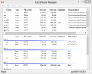
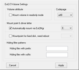

Linux-Partitionen unter Windows
Ausbaufähige Anleitung
Dieser Anleitung fehlen noch einige Informationen. Wenn Du etwas verbessern kannst, dann editiere den Beitrag, um die Qualität des Wikis noch weiter zu verbessern.
Anmerkung: Es fehlt eine kurze Erklärung, wie man mit Ext2IFS nur lesbar einbindet.
 Windows selbst kann nicht auf Linux-Dateisysteme zugreifen. Zusätzliche Programme ermöglichen aber das Lesen (und teilweise auch Schreiben) von ext2/ext3/ext4-Dateisystemen bzw. -Partitionen unter Windows. In diesem Artikel werden verschiedene Lösungen vorgestellt, mit denen man auch unter Windows Zugriff auf Dateien unter Linux bekommt. Voraussetzung ist in jedem Fall ein Benutzerkonto mit Administrator-Rechten. In der folgenden Tabelle werden Programme und Treiber sowie deren Fähigkeiten aufgelistet.
Windows selbst kann nicht auf Linux-Dateisysteme zugreifen. Zusätzliche Programme ermöglichen aber das Lesen (und teilweise auch Schreiben) von ext2/ext3/ext4-Dateisystemen bzw. -Partitionen unter Windows. In diesem Artikel werden verschiedene Lösungen vorgestellt, mit denen man auch unter Windows Zugriff auf Dateien unter Linux bekommt. Voraussetzung ist in jedem Fall ein Benutzerkonto mit Administrator-Rechten. In der folgenden Tabelle werden Programme und Treiber sowie deren Fähigkeiten aufgelistet.
Es wird empfohlen, nur auf die persönlichen Daten (also /home/Benutzername) zuzugreifen. Bei unbedachten Änderungen an Linux-Systemdateien kann das System unbenutzbar werden.
Achtung!
Wichtig: Alle Angaben sind OHNE Gewähr. Die Benutzung der Programme erfolgt auf eigenes Risiko.
| Übersicht | |||||||||||
| Name | Dateisystem | Anmerkung | Lizenz | Projektseite | |||||||
| ext2 | ext3 | ext4 | Btrfs | XFS | ReiserFS | HFS/HFS+ | exFAT | ||||
| Ext2IFS | bindet ext3-Dateisysteme als ext2 ein | Freeware | fs-driver.org  | ||||||||
| Ext2 File System Driver (Ext2FSD) | kann auch auf ext4 schreiben, läuft auch mit Windows 8, 8.1/Windows Server 2012, Windows Server 2012 R2 (Kompatibilitätsmodus beim Setup) | OpenSource | ext2fsd | ||||||||
| Ext2Read | kann auch auf ext4 (nur lesend) zugreifen | OpenSource | ext2read | ||||||||
| ext4tc | Plugin für den Total Commander (Shareware)  , nur lesend , nur lesend | LGPL | ext4tc | ||||||||
| Linux Reader | Dateisystemexplorer, nur Lesemodus | Freeware | DiskInternals.com | ||||||||
| rfstool | nur lesend | GPL | p-nand-q.com | ||||||||
| ExtFS | Ext2/Ext3/Ext4-Partitionen : lesen & schreiben WinXP - Win10 | einschränkte (5MB/s) Shareware | Paragon Software | ||||||||
| Linux File Systems for Windows | Ext2/Ext3/Ext4-Partitionen : lesen & schreiben Btrfs-/XFS-Partitionen : nur lesen Win7 - Win10 | einschränkte (5MB/s) Shareware | Paragon Software | ||||||||
Ext2IFS (Ext2 Installable File System)¶
Ext2IFS ist ein Windows-Treiber, der es erlaubt, ext2- und ext3-Partitionen (letztere mit Einschränkungen) direkt im Windows Explorer einzubinden. Nach der Installation wird man aufgefordert, einer Linux-Partition einen Laufwerksbuchstaben zuzuweisen. Damit kann über den Arbeitsplatz auf die Dateien zugegriffen werden. Über den Punkt "IFS Drives" in der Systemsteuerung kann der Laufwerkbuchstabe nachträglich geändert werden.
Hinweis:
Der Treiber kann prinzipiell nur ext2-Dateisysteme einbinden – allerdings kann man ext3-Dateisysteme als ext2-Dateisystem (ohne Journaling) einbinden.
Funktionen¶
Unterstützt Windows NT4.0, Windows 2000, Windows XP, Windows 2003, Windows Vista und Windows 7. Erfolgreich getestet mit Windows 2000, XP und Windows 7 64-Bit.
Unterstützt UTF-8 (ab Version 1.11 vom 28.01.2008), frühere Versionen hatten damit Probleme (führt zu falscher Anzeige von Sonderzeichen)
Die wichtigsten Operationen, also lesen und schreiben von Dateien, Verzeichnisse auflisten, erstellen, umbenennen, verschieben und löschen von Dateien und Ordnern und abfragen sowie Ändern des Labels, werden unterstützt
Unterstützung von Dateien, die größer als vier Gigabytes sind
USB-Sticks mit ext3-Partitionen werden nach dem Einrichten automatisch immer auf dem selben Laufwerksbuchstaben eingebunden und auf dieselbe Weise wie FAT32- & NTFS-Partitionen entfernt
erkennt versteckte Ordner
Nachteile¶
Wenn man Linux in den Ruhezustand gesetzt hat, kann auf die ext3-Partitionen nicht zugegriffen werden.
Der Zugriff über Windows erfolgt schreibend wie lesend mit Root-Rechten, die eigenen Dateien kann man über die Rechteverwaltung also nicht vor anderen Nutzern des PCs verstecken (??). Dateien schreibt Ex2IFS aber ohne Root-Rechte, damit man auch als normaler Linux-User diese noch editieren kann.
Probleme¶
Siehe auch Ext2IFS FAQ .
Festplatte nicht formatiert, formatieren?¶
Navigiert man im Explorer auf eine eingebundene ext2/3-Partition und erhält eine Fehlermeldung, in der man gefragt wird, ob man die Partition formatieren will, da sie noch nicht formatiert wäre, hat dies einen ganz anderen Hintergrund: beim Einbinden (mounten) der Partition ist ein Fehler aufgetreten.
Mit dem von Ext2IFS angebotenen Diagnose-Tool (mountdiag.exe) kann man die zugehörige Fehlermeldung und einen Lösungshinweis anzeigen lassen.
Mögliche Fehler:
inode size unequal to 128 bytes - das Diagnose-Tool mountdiag.exe liefert die folgende Fehlermeldung:
The volume has an Ext2/Ext3 file system, but the Ext2 IFS 1.11 software did not mount it because the file system has an inode size unequal to 128 bytes (inode size: 256 bytes). The only way to solve it is to back up the volume's files and format the file system: give the mkfs.ext3 utility the -I 128 switch. Finally, restore all backed-up files. After that, the Ext2 IFS software should be able to access the volume.
Möchte man trotz des Fehlers weiter mit Ext2IFS arbeiten, sollte man nach dem in der Fehlermeldung beschriebenen Weg vorgehen. Eine andere Lösung ist der Umstieg auf Ext2FSD.
rfstool¶
rfstool (Open Source) kann von Windows XP aus auf ReiserFS-Partitionen zugreifen.
Anforderungen¶
rfstool wurde unter NT/2000 entwickelt. Die aktuelle Version unterstützt Windows NT, 2000 und XP sowie die 16-bit-Produkte Windows 95, 98 und ME.
NT/2000/XP: man benötigt Administrator-Rechte, um dieses Programm zu starten. Normale Benutzer werden eventuell keine Zugriffsreche für die Partitionen haben.
Man muss wissen, welches Gerät und welche Partition man lesen möchte. Glücklicherweise erkennt die neue Version die Geräte von selbst.
Ext2 File System Driver¶
 
Ext2FSD ist – wie Ext2IFS – ein Windows-Treiber, mit dessen Hilfe ext2/3/4-Partitionen unter Windows eingebunden werden können. Über den Windows Explorer kann dann direkt darauf zugegriffen werden. Über eine kleine grafische Oberfläche können Laufwerksbuchstaben zugeordnet werden und etliche Einbinden-Optionen (Read-Only, Encoding,...) festgelegt werden.
Hinweis für Windows 8, 8.1/Windows Server 2012, Windows Server 2012 R2¶
Bei Windows 8, 8.1/Windows Server 2012, Windows Server 2012 R2 muss beim Setup-Programm der Kompatibilitätsmodus zum Beispiel auf Windows 7 oder niedriger eingestellt werden, damit das Setup ausgeführt und die Anwendung installiert werden kann, ansonsten tritt eine Fehlermeldung in Erscheinung und das Setup verweigert die Installation. Der Computer sollte vorsichtshalber neu gestartet werden, damit die Partitionen in der Liste erscheinen und eingehängt werden können. Derzeit gibt es keine neue Version wo unter anderem auch dieses Problem behoben ist.
Linux Reader¶
Mit diesem Programm kann auf einfachste Weise auf verschiedene Dateisysteme zugegriffen werden (Unix/Linux, Mac, Windows). Die Sprache der Software ist momentan nur auf Englisch, laut Hersteller kann diese übersetzt werden.
Anforderungen¶
Windows XP, 2003 Server, Vista, 7 (x86 und x64), Windows 8 bzw. 8.1 in der 64-Bit Version funktioniert anscheinend nur die 32-Bit Anwendung (LinuxReader.exe nicht die LinuxReader64.exe)
Eigenschaften¶
Zugriff auf folgende Dateisysteme: Ext2/3/4, ReiserFS, HFS, HFS+, Fat, exFAT und NTFS (nur Lesezugriff!)
Dateigrößen sind relativ
Aussehen im Explorer-Look
Programm kann per Boot-CD (Freeware)
erstellt und gestartet werdenAbbildungen von Festplatten/Partitionen (Dateiformat: .dsk und .img) können erstellt und eingebunden werden
Datei-Vorschau in verschiedenen Varianten
Suche nach Dateien (verschiedene Filter einstellbar)
Das Programm kann mit anderen Programmen vom Hersteller interagieren, leider sind diese überwiegend kostenpflichtig
Nachteile¶
Dateigrößen in Ordnern sowie mehrere ausgewählte Dateien um die Gesamtgröße zu bestimmen um etwa Ordner, Dateien auf einer anderen Festplatte/Partition zu Sichern, werden im Kontextmenü
Eigenschaften(PropertiesAlt + ⏎ ) nicht wie unter Linux/Windows angezeigt.
ext4tc¶
Total Commander (Shareware) muss mit Administrationsrechten gestartet werden, damit das Plugin auf das Dateisystem zugreifen kann. Über Netzwerkumgebung\ext4plugin kann auf das Dateisystem zugegriffen werden.
Ext2Read¶
Ext2Read ermöglicht über den eigenen Dateimanager Ext2Explore Lesezugriff auf ext2ext3/ext4-Dateisysteme. Es lassen sich damit auch externe USB-Medien und Dateisystem-Abbilder betrachten. So können z.B. Wubi-Benutzer sehr einfach die .disk-Dateien von Ubuntu mit diesem Programm öffnen.
Das Programm benötigt wie alle anderen hier erwähnten Programme Administrator-Rechte. Erfolgreich getestet u.a. mit Windows 7 (auch 64-Bit).
ExtFS¶
ExtFS & Linux File Systems for Windows von Paragon Software ist ein Treiber der ext2/3/4-Partition & Btrfs- & XFS-Partitionen direkt im Windows-Explorer einbindet. Er ist in einer Freeware Version für den privaten Gebrauch und einer kostenpflichtigen Professional-Version für den gewerblichen Gebrauch mit zusätzlichen Funktionen erhältlich. Die Professional-Version kostet 19,95€ (Stand: 7.12.2017) und hat laut Website im Gegensatz zur Freeware-Version auch schreibgeschützten Zugriff auf das Logical Volume Manager sowie einen Assistenten zum Erstellen und Formatieren von Partitionen.
Windows 7¶
http://robertbeal.com/528/mount-ext3-in-windows-7-x64
- englischsprachiger Blogeintrag zur Verwendung von ext3-Systemen unter Windows 7
Dort wird beschrieben, wie die UAC (User-Account-Control / Benutzerkontensteuerung – ein "neuer" Sicherheitsaspekt ab Windows Vista) abgeschaltet werden kann. UAC verhindert den dauerhaften Zugriff auf ext3-Partitionen, so dass man nach jedem Booten das Programm wieder neu starten und Linux-Partitionen neu benennen und einbinden muss.
Achtung!
Windows-Nutzer müssen davor gewarnt werden, dass mit dem Deaktivieren der UAC ein wichtiger Teil der gerade neu erworbenen Sicherheit von Windows ab Vista wieder abgeschaltet wird. Man sollte damit sehr vorsichtig umgehen, besonders wenn ein Rechner ans Internet angeschlossen oder in Netzwerke eingebunden wird.
Eine einfache Beschreibung zum Abschalten der UAC-Meldungen gibt es hier:
Links¶
Windows-Partitionen einbinden - wenn man den umgekehrten Weg bevorzugt
MS-Windows Integration - Hinweise zum Parallel-Betrieb von Linux und Windows auf einem Rechner oder in einem Netzwerk
- Erstellt mit Inyoka
-
 2004 – 2017 ubuntuusers.de • Einige Rechte vorbehalten
2004 – 2017 ubuntuusers.de • Einige Rechte vorbehalten
Lizenz • Kontakt • Datenschutz • Impressum • Serverstatus -
Serverhousing gespendet von